News Archives: Nov 1, 2003 - Jan 6, 2017
69 stories listed.
 |
"Crossfertilization": Life Sciences Outreach Helps High School Teachers Help Us
- Dec. 19, 2014
It's never too soon to start training and recruiting ... Tags: High School Outreach, Life Sciences, Microbial Sciences Symposium |
|
Phi Beta Kappa Announces Harvard Inductees
- Dec. 8, 2014
Five undergraduates in concentrations administered by MCB have been chosen ... Tags: 2014, Phi Beta Kappa (PBK), honors, undergraduate |
|
 |
2014 Top Docs; Jeff Lichtman
- Dec. 1, 2014
Tags: 2014, In the News, Jeff Lichtman, MCB in the NEWS |
|
Alia Qatarneh receives New England BioLabs' Passion in Science Award
- Nov. 26, 2014
MCB's Alia Qatarneh receives New England BioLabs' Passion in ... Tags: MCB Outreach Program, 2014, High School Outreach, teaching |
|
|
Ruth Fong '15 Named Rhodes Scholar
- Nov. 25, 2014
Ruth Fong '15, a computer science concentrator in MCB is ... Tags: 2014, David Cox, Rhodes Scholar, Undergraduate Prizes, undergraduate education |
|
| 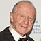 |
Matthew Meselson receives Double Helix Medal from Cold Spring Harbor Laboratory
- Nov. 21, 2014
Geneticist Matthew Meselson, PhD, has received the Double Helix Medal ... Tags: 2014, 2014 Double Helix Medal, Matthew Meselson, award |
|
Nine Research Fellowships Awarded for MCB Graduate Students in 2014
- Nov. 5, 2014
Eight MCB graduate students have won fellowships this month to ... Tags: 2014, Graduate Student Fellowships, graduate student education, mco |
|
|
Postdoc Profile: Antje Fischer [Mango Lab]
- Oct. 30, 2014
Antje Fischer never outgrew her childhood desire to be a ... Tags: 2014, Susan Mango, education, postdoc profile |
|
|
One Small Tweak Converts a Transporter from a One-way into a Two-way Street [Gaudet Lab]
- Oct. 28, 2014
At the heart of our adaptive immune system is the ... Tags: 2014, Rachelle Gaudet, nature communications, publication |
|
|
Lis1 [Leschziner Lab]
- Oct. 28, 2014
Cytoskeletal motors are molecular machines that "walk" along the filaments ... Tags: 2014, Andres Leschziner, eLife, publication |
|
|
Briana Burton Awarded the Fannie Cox Prize for Excellence in Science Teaching
- Oct. 16, 2014
Briana Burton, Associate Professor of Molecular and Cellular Biology, has ... Tags: 2014, Briana Burton, Fannie Cox Prize for Excellence in Science Teaching, award, undergraduate education |
|
|
Jeffrey I. Gordon to Give 2014 Prather Lectures October 29-31
- Oct. 15, 2014
Jeffrey I. Gordon to Give 2014 Prather Lectures October 29-31 ... Tags: 2014, Prather Lectures |
|
|
Summer Research Opportunities at Harvard (SROH)
- Oct. 15, 2014
Now that this year's summer interns have printed their ... Tags: MCB Outreach Program, 2014, SROH, Summer Research Opportunities at Harvard, undergraduate education |
|
|
Ethan Garner Receives NIH New Innovator Award
- Oct. 6, 2014
Ethan Garner, an assistant professor in the Department of Molecular ... Tags: 2014, Ethan Garner, NIH New Innovator Award (DP2) |
|
 |
MCB Faculty Receive Grant Funding through BRAIN Initiative
- Oct. 2, 2014
MCB faculty receive funding through BRAIN (Brain Research through Advancing ... Tags: 2014, Alexander Schier, Brain Research through Advancing Innovative Neurotechnologies, Florian Engert, Jeff Lichtman, Joshua Sanes |
 |
Howard Berg Receives International Biophysics Prize
- Sept. 30, 2014
Howard Berg, Herchel Smith Professor of Physics and Professor of ... Tags: 2014, Howard Berg, Raymond and Beverly Sackler International Prize in Biophysics, award |
|
Harvard Bangalore Science Initiative
- Sept. 26, 2014
MCB's Venkatesh Murthy founded the Initiative in 2007 with ... Tags: 2014, Harvard-Bangalore Science Initiative, Undergraduate Summer Internship, undergraduate education |
|
|
MCB Researchers Receive Departmental Honors
- Sept. 25, 2014
Awards for outstanding work were presented at the 2014 MCB ... Tags: 2014, Bjorkman-Strominger-Wiley Prize, Doty-Losick Prize for Exceptional Service, Ernest Peralta Fund Award, MCB Research Retreat, Meselson Prize for the Most Beautiful Experiment, awards |
|
|
Postdoc Profile: Miguel Coelho [Murray Lab]
- Sept. 16, 2014
Growing up in Lisbon, Portugal, Miguel Coelho was a curious ... Tags: 2014, Andrew Murray, education, postdoc profile |
|
 |
MCB 63 Biochemistry and Molecular Medicine
- Sept. 3, 2014
The course integrates an introduction to the structure of macromolecules ... Tags: 2014, MCB 63, MCB course, new course, undergraduate education |
|
Joan Steitz to Deliver 2015 John T. Edsall Lecture
- Sept. 3, 2014
Joan Steitz, a Howard Hughes Medical Institute (HHMI) Investigator and ... Tags: 2014, John T. Edsall Lecture, lecture |
|
|
David Cox Receives Google Faculty Research Award
- Aug. 29, 2014
David Cox, Assistant Professor in the Department of Molecular and ... Tags: 2014, David Cox, Google Faculty Research Award, MCB faculty, award |
|
| 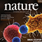 |
RNA Remodeling by an Efficient Retroviral Renovator [D'Souza Lab]
- Aug. 20, 2014
As anyone who has renovated a home knows, the process ... Tags: 2014, Nature, Victoria D'Souza, publication |
| 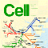 |
Building a Club Sandwich [Sanes Lab]
- Aug. 20, 2014
The aim of developmental neurobiology is to learn how the ... Tags: 2014, Cell, Joshua Sanes, publication |
|
In Memoriam: The Glowing Career of Woody Hastings
- Aug. 8, 2014
Bioluminescence delights children catching fireflies, amazes sailors navigating sparkling seas ... Tags: 2014, Woody Hastings, faculty profile |
|
| 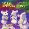 |
Partners for Life [Sanes Lab]
- Aug. 7, 2014
Neurons form precise relationships with particular synaptic partners and these ... Tags: 2014, Joshua Sanes, Nature Neuroscience, publication |
|
Inputome of Dopamine and Serotonin Neurons [Uchida Lab]
- Aug. 6, 2014
When I told my niece in medical school that I ... Tags: 2014, Cell Reports, Naoshige Uchida, publication |
|
|
Detection of Target Odors from Mixtures [Murthy Lab]
- Aug. 4, 2014
Natural environments are rich with sensory stimuli. To make sense ... Tags: 2014, Nature Neuroscience, Venkatesh Murthy, publication |
|
| 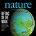 |
Coupling Transcription and Translation in Eukaryotes [O'Shea Lab]
- Aug. 4, 2014
The central dogma of molecular biology proposes that information flows ... Tags: 2014, Erin O'Shea, publication |
| 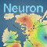 |
Rescuing Sensory Integration in Mouse Models of Autism [Hensch Lab]
- July 31, 2014
Many people with autism display atypical sensory processing, and in ... Tags: 2014, Neuron, Takao Hensch, publication |
|
Postdoc Profile: David Gire [Murthy Lab]
- July 29, 2014
David Gire paved his path-to-the-postdoc with collaboration and interdisciplinary inspiration ... Tags: 2014, Venkatesh Murthy, education, postdoc profile |
|
| 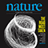 |
Spatial Patterning of Meiotic Crossovers: A Century-old Mystery [Kleckner Lab]
- July 25, 2014
Gamete formation for sexual reproduction involves the specialized cellular program ... Tags: 2014, Nancy Kleckner, Nature, publication |
| 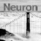 |
Larval Zebrafish on Speed [Engert Lab]
- July 24, 2014
When we decide to go down the corridor and get ... Tags: 2014, Florian Engert, Neuron, publication |
|
Membrane Protein Insertion [Denic Lab]
- July 21, 2014
Membrane protein insertion is a fundamental process in cell biology ... Tags: 2014, Bowdoin Prize in the Natural Sciences, Vlad Denic, publication |
|
|
Get to Know SROH (Summer Research Opportunities at Harvard)
- July 16, 2014
Since 2009, Summer Research Opportunities at Harvard (SROH) has hosted ... Tags: MCB Outreach Program, 2014, MCO Outreach Program, SROH, Undergraduate Summer Internship, education |
|
|
Genetics Society of America Honored Andrea Pauli [Schier Lab]
- July 11, 2014
The Genetics Society of America (GSA) has selected Andrea Pauli ... Tags: 2014, Alexander Schier, postdoctoral award |
|
| 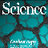 |
Probing the Origins of Symbiosis [Murray Lab]
- July 4, 2014
We investigated the origins of symbiosis by ecologically engineering brewers ... Tags: 2014, Andrew Murray, Science, publication |
|
Andrew Murray: Magpie, Romantic, HHMI Professor
- June 30, 2014
Andrew Murray is one of 15 new Howard Hughes Medical ... Tags: 2014, Andrew Murray, HHMI Professor, Howard Hughes Medical Institute (HHMI) |
|
|
Hopi Hoekstra Named Harvard College Professor
- June 26, 2014
Professor Hopi Hoekstra was recently named a Harvard College Professor ... Tags: 2014, College Professorship, Hopi Hoekstra |
|
| 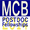 |
Seven MCB Post-doctoral Researchers Awarded Post-doctoral Fellowships
- June 13, 2014
The MCB department is pleased to announce the fellowships awarded ... Tags: 2014, Postdoctoral Fellowships, Postdoctoral Research Fellow |
|
MCB 101 Human Genetics
- June 13, 2014
MCB 101 Human Genetics Genomic information is accelerating the discovery ... Tags: 2014, Craig Hunter, MCB 101, new course, undergraduate education |
|
 |
Stochastic Organelle Biogenesis [O'Shea Lab]
- June 10, 2014
Cells are kind of like little people. Just like we ... Tags: 2014, Erin O'Shea, eLife, publication |
|
Murray and Lichtman Elected to National Academy of Sciences
- June 6, 2014
MCB Professors Andrew Murray and Jeff Lichtman have been elected ... Tags: 2014, Andrew Murray, Jeff Lichtman, National Academy of Sciences, award |
|
 |
Sexually Dimorphic Mammalian Brain Function at the Single Neuron Level [Dulac Lab]
- June 3, 2014
Individual neurons distributed across the sensory epithelium of the vomeronasal ... Tags: 2014, Catherine Dulac, eLife, publication |
|
MCB 60 Cellular Biology and Molecular Medicine
- June 2, 2014
MCB 60 Cellular Biology and Molecular Medicine This course provides ... Tags: 2014, Alexander Schier, Briana Burton, MCB 60, Vlad Denic, course, teaching, undergraduate education |
|
|
MCB's Tom Torello Receives Excellence in Teaching Prize
- May 30, 2014
Harvard's Phi Beta Kappa chapter has awarded one of ... Tags: 2014, Tom Torello, award, teaching, undergraduate education |
|
|
Four Undergraduates Receive Awards
- May 27, 2014
Four undergraduates concentrators from Chemical and Physical Biology (CPB), Molecular ... Tags: 2014, John E. Dowling Thesis Prize, Lawrence J. Henderson Prize, Thomas Temple Hoopes Prize, Undergraduate Prizes, undergraduate education |
|
|
MCB Concentrator Will Clerx Featured in the Harvard Gazette
- May 20, 2014
Tags: 2014, MCB concentration, undergraduate education |
|
| 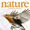 |
The Hand that Rocks the Cradle [Dulac Lab]
- May 15, 2014
The discovery of neural circuits underlying social behavior is among ... Tags: 2014, Catherine Dulac, Nature, publication |
| 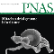 |
Two-factor Authentication, Not Just for Gmail [Burton Lab]
- May 14, 2014
One way that bacteria communicate with each other is by ... Tags: 2014, Briana Burton, PNAS, publication |
|
Invitation to the 2014 Boston Bacterial Meeting
- April 30, 2014
For the past 20 years, the annual Boston Bacterial Meeting ... Tags: 2014, BBM, Boston Bacterial Meeting, symposium |
|
|
Alex Schier Receives Mentoring Award
- April 28, 2014
Professor Alex Schier has received an Everett Mendelsohn Excellence in ... Tags: 2014, Everett Mendelsohn Excellence in Mentoring Award, award, education, graduate student education |
|
|
Postdoc Profile: Sarah Wacker [Losick Lab]
- April 22, 2014
There's no such thing as a "typical" postdoc. Tags: 2014, Postdoctoral Research Fellow, education, profile |
|
|
EPB to Hold Annual Symposium, Saturday, April 26
- April 18, 2014
On Saturday, April 26, the annual Engineering and Physical Biology ... Tags: 2014, Engineering and Physical Biology Symposium, epb |
|
|
New and Improved! Introducing the Revised Undergraduate MCB Concentration
- April 15, 2014
The MCB department is announcing some exciting changes to the ... Tags: 2014, MCB concentration, undergraduate education |
|
|
Digital animations invite us to "Watch Proteins Do the Jitterbug"
- April 10, 2014
In the News Tags: 2014, MCB in the NEWS, New York Times |
|
|
11th Annual Microbial Sciences Initiative (MSI) Symposium Explores the Richest Biological Reservoir on Earth
- April 7, 2014
Microbes (including bacteria, viruses, fungi, and protists) are ubiquitous on ... Tags: 2014, MSI, Microbial Sciences Symposium, symposium |
|
|
Look Mom, No Breaks! [Kleckner Lab]
- April 4, 2014
Chromosomal regions of identical or nearly identical DNA sequence can ... Tags: 2014, Nancy Kleckner, nature communications, publication |
|
|
Frances Arnold to Deliver 2014 John T. Edsall Lecture
- April 4, 2014
Frances Arnold, Ph.D., will deliver the 2014 John T ... Tags: 2014, John T. Edsall Lecture, lecture |
|
| 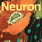 |
Transparent Thoughts [Engert Lab]
- March 19, 2014
How do brains process sensory input and use these to ... Tags: 2014, Florian Engert, Neuron, publication |
| 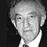 |
Honoring the 80th Birthday of Prof. Howard C. Berg
- March 13, 2014
MCB Announcement On Friday, March 14, 2014 at 3:00 ... Tags: 2014, Howard Berg, special seminar |
|
Merck Fellowships Advance Research of Honorees Gibbs and DSouza
- March 12, 2014
Karine Gibbs, Assistant Professor of Molecular and Cellular Biology (MCB ... Tags: 2014, MCB faculty, award, fellowship |
|
|
On March 6, Marc Kirschner Presents 2014 Bloch Lecture
- March 3, 2014
Marc Kirschner is an outstanding cell and developmental biologists whose ... Tags: 2014, Bloch Lecture |
|
 |
Jeff Lichtman
- Feb. 10, 2014
MCB in The NEWS Tags: 2014, In the News, Jeff Lichtman, National Geographic |
|
Teachers as Scholars: John Dowling's "Amazing Brain" Links Harvard to the Greater Boston Education Community
- Jan. 27, 2014
Tags: MCB Outreach Program, 2014, John Dowling, teaching |
|
|
New Course: MCB 170 [Laura Magnotti]
- Jan. 23, 2014
The brain has evolved a unique but very effective system ... Tags: 2014, Laura Magnotti, course, teaching |
|
|
New Course: MCB 68 [Prof. Ethan Garner and Prof. Jeff Lichtman]
- Jan. 21, 2014
MCB 68 explores three fundamental fields of eukaryotic cell biology ... Tags: 2014, Ethan Garner, Jeff Lichtman, MCB 68, course, teaching |
|
|
Catherine Dulac to Deliver Prestigious Harvey Lecture
- Jan. 15, 2014
Professor Catherine Dulac will present a Harvey Lecture on Wednesday ... Tags: 2014, Catherine Dulac, Harvey Lecture, lecture |
|
| 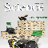 |
Moving Like a Toddler [Schier Lab]
- Jan. 9, 2014
According to the British embryologist Lewis Wolpert, "it is not ... Tags: 2014, Alexander Schier, Science, publication |